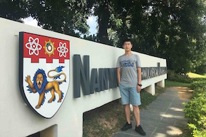

|  |
Sen Chen
Research Assistant Professor Nanyang Technological University, Singapore Cyber Security Lab@NTU ecnuchensen@gmail.com and chensen@ntu.edu.sg |
I am a Research Assistant Professor@NTU and working in the research group of Prof. Liu Yang. I am focusing on security and software engineering. I received my Ph.D. degree in ECNU, Shanghai, China (2014-2019), under the superivsion of Prof. Lihua Xu (NYU Shanghai). I had been a Research Assistant (2016-2019) and Research Fellow (2019-2020) at NTU. I received an ACM SIGSOFT Distinguished Paper Award at ICSE 2018.
[Highlights]
Security:
AUSERA (ICSE'20, ESEC/FSE'18), GUI-Squatting Attack (TDSC'19), FakeApp (ICSE'19)
FakeBob (Oakland'21), SiOS (USENIX Security'20), KuafuDet (COSE'17), StormDroid (ASIACCS'16)
Begonia (CCS'16), MobiDroid (ICECCS'19), MobiTive ('20), XMal ('20)
Software Engineering:
StoryDroid (ICSE'19), Exlocator (ICSE'18), APEChecker (ASE'18), DroidDefects (TSE'20)
Deep Learning and Data-Driven Intelligence:
ATOM (TSE'20), CORE (SANER'20)
DL Development and Deployment across Frameworks and Platforms (ASE'19)
 July 2020: Our paper "Why My App Crashes? Understanding and Benchmarking Framework-specific Exceptions of Android apps" accepted by TSE 2020!
July 2020: Our paper "Why My App Crashes? Understanding and Benchmarking Framework-specific Exceptions of Android apps" accepted by TSE 2020!
I will join the College of Intelligence and Computing, Tianjin University as a tenued associate professor.
April 2020: Our paper "Who is Real Bob? Adversarial Attacks on Speaker Recognition Systems" accepted by Oakland 2021!
March 2020: Our paper "iOS, Your OS, Everybody's OS: Vetting and Analyzing Network Services of iOS Applications" accepted by USENIX Security 2020!
Joined PC member of ICECCS 2020, submit your paper.
December 2019: Our paper "An Empirical Assessment of Security Risks of Global Android Banking Apps" accepted by ICSE 2020!
[2021]
[Oakland 2021] Guangke Chen, Sen Chen#, Lingling Fan, Xiaoning Du, Fu Song*, and Yang Liu, "Who is Real Bob? Adversarial Attacks on Speaker Recognition Systems". In Proceedings of the 42nd IEEE Symposium on Security and Privacy, San Francisco, CA, USA, 2021.
[Highlights] [Source code] [Website] [Press]
(1) Our attack is demonstrated to be effective on the commercial system Talentedsoft, transferable and practical on the open-set identification task of Microsoft Azure even when playing over the air in the physical world.
[2020]
[TSE 2020]Ting Su, Lingling Fan, Sen Chen, Yang Liu, Lihua Xu, Geguang Pu, and Zhendong Su, "Why My App Crashes? Understanding and Benchmarking Framework-specific Exceptions of Android apps", IEEE Transactions on Software Engineering. (accepted, impact factor: 6.112)
[Highlights]
(1) DroidDefects, the first comprehensive and largest benchmark of Android app exception bugs, which contains 33 reproducible exceptions (test cases, stack traces, faulty/fixed app versions, bug types, etc.) and 3,696
ground-truth exceptions.
[USENIX Security 2020] Zhushou Tang, Ke Tang, Minhui Xue, Yuan Tian, Sen Chen, Muhammad Ikram, Tielei Wang, and Haojin Zhu, "iOS, Your OS, Everybody's OS: Vetting and Analyzing Network Services of iOS Applications", In Proceedings of the 29th USENIX Security Symposium, Boston, MA, USA, 2020.
[Highlights] [Website]
(1) We have disclosed identified network service vulnerabilities in iOS apps and received acknowledgements from vendors, such as Google for Waze and Tencent for Now and QQBrowser.
[ICSE 2020] Sen Chen, Lingling Fan, Guozhu Meng, Ting Su, Minhui Xue, Yinxing Xue, Yang Liu, and Lihua Xu, "An Empirical Assessment of Security Risks of Global Android Banking Apps", In Proceedings of the 42nd International Conference on Software Engineering, Seoul, South Korea, 2020. (129/617 = 20.9%)
[Highlights] [Website]
(1) Until now, 21 banks such as HSBC (UK and China) and OCBC (Singapore) have confirmed 126 vulnerabilities, 52 vulnerabilities have been patched.
(2) AUSERA will soon provide an automated security risk assessment for Android apps as a business online service, as well as the vulnerable third-party library assessment and native code vulnerability assessment.
[SANER 2020] Jing Kai Siow, Cuiyun Gao, Lingling Fan, Sen Chen, and Yang Liu, "CORE: Automating Review Recommendation for Code Changes", In Proceedings of the 27th IEEE International Conference on Software Analysis, Evolution and Reengineering, London, Ontario, Canada, 2020. (44/199 = 21.1%)
[Highlights] [Website]
[2019]
[TDSC 2019] Sen Chen, Lingling Fan, Chunyang Chen, Minhui Xue, Yang Liu, and Lihua Xu, "GUI-Squatting Attack: Automated Generation of Android Phishing Apps", Transactions on Dependable and Secure Computing. (accepted, impact factor: 6.404)
[Highlights] [Website]
[ASE 2019] Qianyu Guo, Sen Chen*, Xiaofei Xie, Lei Ma, Qiang Hu, Hongtao Liu, Yang Liu, Jianjun Zhao, and Xiaohong Li, "An Empirical Study towards Characterizing Deep Learning Development and Deployment across Different Frameworks and Platforms", In Proceedings of the 34th IEEE/ACM International Conference on Automated Software Engineering, San Diego, California, United States, 2019. (93/445 = 20.9%)
[Highlights] [Website]
(1) The found compatibility bugs have been confirmed by the TensorFlow.js development team.
[ICECCS 2019] Ruitao Feng, Sen Chen*, Xiaofei Xie, Lei Ma, Guozhu Meng, Yang Liu, and Shangwei-Lin, "MobiDroid: A Performance-Sensitive Malware Detection System on Mobile Platform", In Proceedings of the 24th International Conference on Engineering of Complex Computer Systems, Hong Kong, China, 2019. (21/88 = 23.9%)
[ICSE 2019] Sen Chen, Lingling Fan, Chunyang Chen, Ting Su, Wenhe Li, Yang Liu, and Lihua Xu, "StoryDroid: Automated Generation of Storyboard for Android Apps", In Proceedings of the 41st International Conference on Software Engineering, Montréal, QC, Canada, 2019. (109/529 = 20.6%)
[Highlights] [Website]
(1) StoryDroid automatelly generates the storyboards of Android apps and provides rich features (e.g., Component transition graph with UI pages, GUI components, logic code, and layout code) for app review and competitive analysis.
[ICSE 2019] Chongbin Tang, Sen Chen#, Lingling Fan, Lihua Xu, Yang Liu, Zhushou Tang and Liang Dou. "A Large-Scale Empirical Study on Industrial Fake Apps", In Proceedings of the 41st ACM/IEEE International Conference on Software Engineering, Software-Engineering-in-Practice Track (SEIP), Montréal, QC, Canada, 2019.
[SANER 2019] Sen Chen, Lingling Fan, Ting Su, Lei Ma, Yang Liu and Lihua Xu. "Automated Cross-Platform GUI Code Generation for Mobile Apps", In Proceedings of the 26th IEEE International Conference on Software Analysis, Evolution, and Reengineering, AI4Mobile, Hangzhou, China, 2019.
[SANER 2019] Sen Chen, Minhui Xue, Lingling Fan, Lei Ma, Yang Liu and Lihua Xu. "How Can We Craft Large-Scale Mobile Malware? An Automated Poisoning Attack", In Proceedings of the 26th IEEE International Conference on Software Analysis, Evolution, and Reengineering, AI4Mobile, Hangzhou, China, 2019.
[2018]
[ESEC/FSE 2018] Sen Chen, Ting Su, Lingling Fan, Guozhu Meng, Minhui Xue, Yang Liu, and Lihua Xu, "Are Mobile Banking Apps Secure? What Can be Improved?", In Proceedings of the 26th ACM Joint European Software Engineering Conference and Symposium on the Foundations of Software Engineering, Lake Buena Vista, Florida, United States, 2018.
[Secure SE 2018] Lei Ma, Felix Juefei-Xu, Minhui Xue, Qiang Hu, Sen Chen, Bo Li, Yang Liu, Jianjun Zhao, Jianxiong Yin and Simon See, "Secure Deep Learning Engineering: A Software Quality Assurance Perspective".
[ASE 2018] Lingling Fan, Ting Su, Sen Chen, Guozhu Meng, Yang Liu, Lihua Xu and Geguang Pu, "Efficiently Manifesting Asynchronous Programming Errors in Android Apps", In Proceedings of the 33rd IEEE/ACM International Conference on Automated Software Engineering, Montpellier, France, 2018. (69/346 = 19.9%)
[NASAC 2018] Sen Chen, Guozhu Meng, Ting Su, Lingling Fan, Minhui Xue, Yinxing Xue, Yang Liu, and Lihua Xu, "AUSERA: Large-Scale Automated Security Risk Assessment of Global Mobile Banking Apps".
[Highlights]
(1) We won a Prototype Research Tool Award 3rd Place in NASAC 2018 (National Software Application Conference) held by CCF.
[ICSE 2018] Lingling Fan, Ting Su, Sen Chen, Guozhu Meng, Yang Liu, Lihua Xu, Geguang Pu and Zhendong Su, "Large-Scale Analysis of Framework-Specific Exceptions in Android Apps", In Proceedings of the 40th International Conference on Software Engineering, Gothenburg, Sweden, 2018. (105/502 = 20.9%)
[Highlights]
(1)  ACM SIGSOFT Distinguished Paper Award
(2) Dataset of Android Exceptions
Statistics of Dataset Access
Award
Press
ACM SIGSOFT Distinguished Paper Award
(2) Dataset of Android Exceptions
Statistics of Dataset Access
Award
Press
[2017]
[Computers & Security 2017] Sen Chen, Minhui Xue, Lingling Fan, Shuang Hao, Lihua Xu, Haojin Zhu, and Bo Li, "Automated Poisoning Attacks and Defenses in Malware Detection System: An Adversarial Machine Learning Approach", In Proceedings of the Elsevier Computers & Security, 2017. (accepted) [Highlights] [Dataset of Android Malware]
[2016]
[APSEC 2016] Lingling Fan, Sen Chen, Lihua Xu, Zongyuan Yang, Huibiao Zhu, Model-Based Continuous Verification, In Proceedings of the IEEE ASIA-Pacific Software Engineering Conference, Hamilton, New Zealand, 2016. (acceptance rate: 19.7%)
[ASIACCS 2016] Sen Chen, Minhui Xue, Zhushou Tang, Lihua Xu, and Haojin Zhu, "StormDroid: A Streaminglized Machine Learning-Based System for Detecting Android Malware", In Proceedings of the ACM Asia Conference on Computer and Communications Security, Xi'an, China, 2016. (73/350 = 20.8%)
[Highlights]
[Statistics of Dataset Access]
[MobiCom 2016] Sen Chen, Minhui Xue, Lihua Xu, "Towards Adversarial Detection of Mobile Malware", In Proceedings of the Annual International Conference on Mobile Computing and Networking, New York, USA, 2016.
[CCS 2016] Lingling Fan, Minhui Xue, Sen Chen, Lihua Xu, Haojin Zhu, "Accuracy vs. Time Cost: Detecting Android Malware through Pareto Ensemble Pruning", In Proceedings of the ACM Conference on Computer and Communications Security, Vienna, Austria, 2016.
-Chairs
Proceedings Chair of the 26th Asia-Pacific Software Engineering Conference (APSEC 2020)
Financial Chair of the 12nd Asia-Pacific Symposium on Internetware (Internetware 2020)
-Reviewers and PC members
Reviewer of the Journal of IEEE Transactions on Information Forensics and Security (TIFS 2018 - 2020)
Reviewer of the Journal of IEEE Transactions on Dependable and Secure Computing (TDSC 2019, 2020)
Reviewer of the Journal of Computers & Security (COSE 2019, 2020)
Reviewer of the Journal of Automated Software Engineering (ASEJ 2019, 2020)
Reviewer of the ACM Transactions of Cyber-Physical Systems (TCPS 2020)
Reviewer of the Springer Cybersecurity (Cybersecurity 2020)
Reviewer of the Journal of IEEE Transactions on Software Engineering (TSE 2020)
PC member of the Student Research Competition (ASE 2020)
PC member of the 25th International Conference on Engineering of Complex Computer Systems (ICECCS 2020)
PC member of the 1st IEEE International Workshop on Artificial Intelligence for Mobile (AI4Mobile 2019)
-Co-Reviewers
ISSTA 2018, 2019, ASE 2018, 2019, 2020 USENIX Security 2018, 2019, CCS 2018, 2019, Oakland 2018, 2019, ESEC/FSE 2019

|
|---|
| ©2020 Sen Chen. All rights reserved |